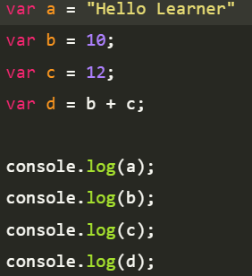
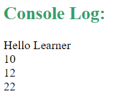
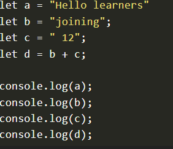
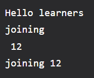

Variables and Datatypes in JavaScript
Understanding variables and data types in JavaScript will help you to write error-free code. In this article, we are going to learn what are Variables and Datatypes in JavaScript.
Variables
In JavaScript, variables are used to store and manage data. They are created using the var, let, or const keyword.
var x=10;
Example
output
Example: In this example, we will declare variables using let.
Output
Data Types
JavaScript is a dynamically typed (also called loosely typed) scripting language. In JavaScript, variables can receive different data types over time. The latest ECMAScript standard defines eight data types Out of which seven data types are Primitive(predefined) and one complex or Non-Primitive.
Primitive Data Types
The predefined data types provided by JavaScript language are known as primitive data types. Primitive data types are also known as in-built data types.
Number: JavaScript numbers are always stored in double-precision 64-bit binary format IEEE 754. Unlike other programming languages, you don’t need int, float, etc to declare different numeric values.
String: JavaScript Strings are similar to sentences. They are made up of a list of characters, which is essentially just an “array of characters, like “Hello Learner” etc.
Boolean: Represent a logical entity and can have two values: true or false.
Null: This type has only one value that is null.
Undefined: A variable that has not been assigned a value is undefined.
Symbol: Symbols return unique identifiers that can be used to add unique property keys to an object that won’t collide with keys of any other code that might add to the object.
BigInt: BigInt is a built-in object in JavaScript that provides a way to represent whole numbers larger than 253-1.
Non-Primitive Data Types
The data types that are derived from primitive data types of the JavaScript language are known as non-primitive data types. It is also known as derived data types or reference data types.
Object: It is the most important data type and forms the building blocks for modern JavaScript.